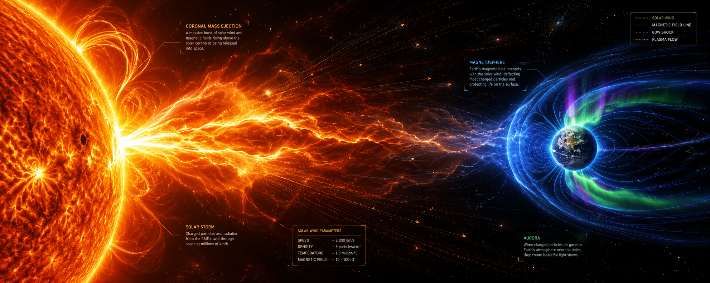

UKRAA
About us
Origins
The UK Radio Astronomy Association was established in 2008 as a registered charity (registration no 1123866) in the United Kingdom. UKRAA’s objectives are to promote the science of radio astronomy and all branches of radio astronomical research. Prior to UKRAA’s formation, British Astronomical Association’s Radio Astronomy Group (RAG) members had designed and built working protypes of a VLF Receiver and Magnetometer. UKRAA was set up to handle the manufacture and sale of these products and the production of technical manuals covering the use of the products and the background science.
Not for profit
UKRAA is a not for profit business. Any surplus income funds the development of new products and our outreach activities. To keep our prices low UKRAA relies on the volunteers and Trustees giving their time.
Activities
Our primary activity is to supply equipment to amateur astronomers and other interested researchers. The design of new products and the manufacture of equipment for sale is all carried out by volunteers. To promote radio astronomy to amateur astronomers we give talks to local Astronomical Societies and amateur radio clubs and have provided support to schools and university departments on educational projects.
THE DETECTOR
Detecting magnetic variations from the comfort of your armchair
UKRAA is pleased to announce our new magnetometer is under development and testing.
We will be soft launching the magnetometer at AstroFest 2026, held at the Kensington Conference Centre, on 6th and 7th February 2026.
When we introduce the finished device, it will be fully tested and provided with the operating software loaded.
As supplied, the magnetometer will record in three axies - X, Y and Z - and then produce H, D and Z graphs as well as B and I graphs.
The new magnetometer uses three FLC-100 fluxgate sensors, that are syncronised together to reduce interference.
All data are output as a CSV file on a micro-SD card or to serial via USB connected to a SBC.
Full software is available to record, process and plot events and display on your local intranet using a Raspberry Pi4/5
UKRAA MkII Magnetometer

ROLLING MAGNETOMETER STATUS
24-hour rolling plots refreshed every 5 minutes
Rolling status unavailable
Waiting for the latest rolling status file.


MY DAILY ACTIVITY RESULTS
This data is from my Magnetometer detector
No accuracy is claimed for any published data

MY XYZ RESULTS
Rolling 24-hour plot (updated every 5 minutes) followed by yesterday's full-day plot
No accuracy is claimed for any published data


MY HDZ RESULTS
These graphs are displayed when HDZ plotting is enabled.
No accuracy is claimed for any published data.


MY BI RESULTS
These graphs are displayed when BI plotting is enabled.
No accuracy is claimed for any published data.